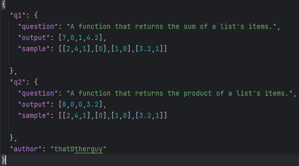

🔍 Info
General:
Silicon.py aims to deliver true sandbox coding experience for students, researchers and anyone who would like to experiment and tinker with code.
Major strengths of using Silicon.py include having multiple library support, aesthetics, a heavenly coding experience and Challenge Packs.
I hope you enjoy my product. Thanks and have fun coding! 🤩
Project last updated on 24/1/26
Code Editor:
Click inside the editor and press F10 to make editor go fullscreen.
Either use F5 or press or the header to run your code. Code is saved after it runs.
Use CTRL + Left Click for multi-cursor editing.
numpy, scipy, pandas, matplotlib, sympy, scikit-learn, statsmodels, numba, matplotlib, bokeh, seaborn, biopython, rdkit, pyodide-py, lxml, pyyaml, dateutil, pytz, httpx, requests, websockets, scikit-learn, xgboost, micropip, pytest, setuptools support inbuilt.
You can swipe numbers to increase/decrease and booleans are toggle-able by clicking. These are the beta-features.
Top of the line AI (gpt-5.2-codex) is integrated within the application. Use it (for free!) to your advantage to generate and understand code.
Challenge Packs:
Challenge packs aim to deliver a Leetcode inspired challenge system EXCEPT that challenge packs are decentralized, which means that anybody can create these packs and share each other as JSON files.
Still working on online functionality where users can post these packs in the application itself instead of sharing the JSON files with each other on different platforms.
A challenge pack looks like this:

The JSON file should contain author key and questions 1, 2, 3 in form of q1,q2,q3.
In each q(number) object, there should be a question key that narrates the problem, the sample which contains the input that the app will test the user's code on and output which should be the answer to each sample.
Challenge Packs are still not finished and you may encounter bugs.
< Back to editor >